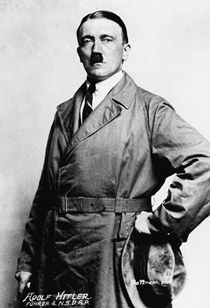

“만약 히틀러가 없었다면.” 아직도 흔히 회자되는 역사 가정이다. 히틀러가 태어나지 않았다면, 히틀러가 독일 총통이 되지 않았다면, 사고로 죽었거나 암살 당했다면. 그러면 세상은 어떻게 달라졌을까. 이 모티브로 수많은 소설과 영화와 게임이 창작되었고, 아직도 수많은 역사가들과 밀덕들의 열렬한 논쟁 주제다.
회의론자들은 말한다. 히틀러 한명 없었다고 역사가 달라지진 않았다고. 인류의 역사는, 특히 20세기 현대사는 단 한명의 또라이가 좌우하기엔 너무 크고 복잡하다고. 이들이 잊고 있는 것은 그동안 인류 역사는 대부분 “단 한명의 또라이”에 의해 좌우돼 왔다는 점이다. 카이사르, 알렉산더 대왕, 칭기스칸, 나폴레옹, 스탈린과 레닌, 모택동과 등소평에 이르기까지. 실제 인류의 역사는 아무도 예측 못했던 단 한명의 미친 또라이에 의해 수천수만번 운명이 바뀌어 왔다. 그래서 현실은 이렇다.